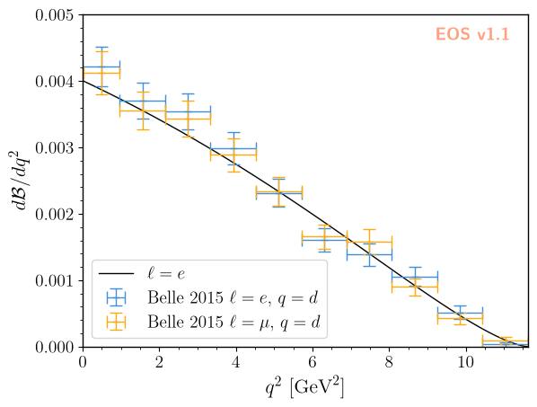
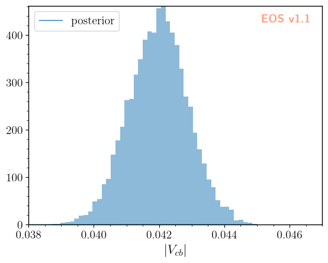
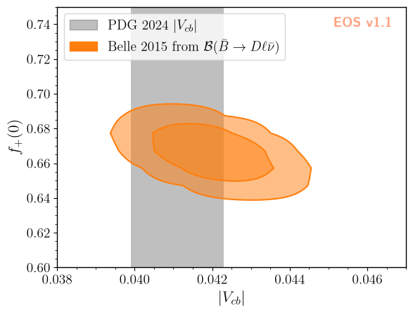
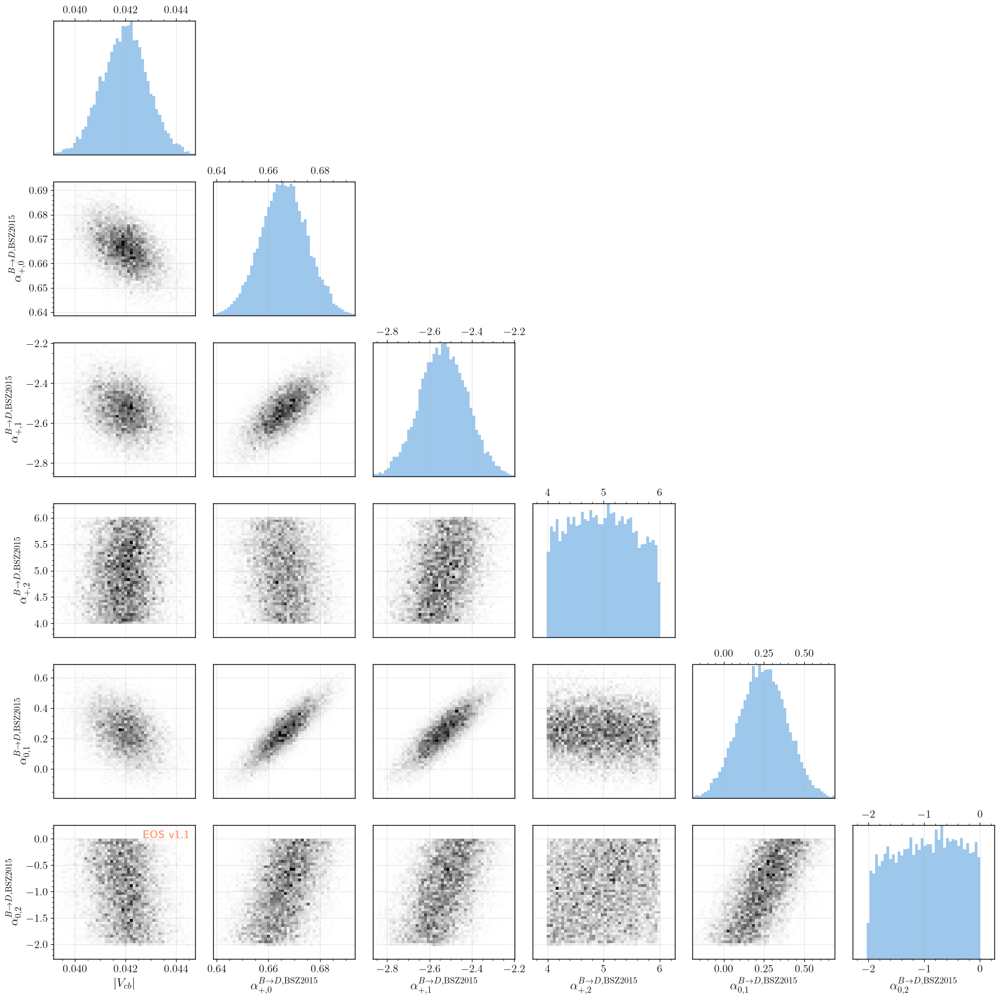
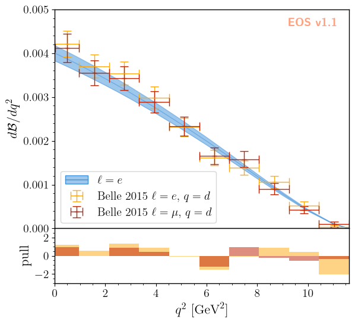

Parameter Inference
EOS can infer parameters based on a database of experimental or theoretical constraints and its built-in observables. The examples in this notebook illustrate how to find a specific constraint from the list of all built-in observables, include them in an analysis file, and infer mean value and standard deviation of a list of parameters through sampling methods.
[1]:
import eos
import numpy as np
Listing the built-in Constraints
The full list of built-in constraints for the most-recent EOS release is available online here. You can also show this list using the eos.Constraints class. Searching for a specific constraint is possible by filtering for specific strings in the constraint name’s prefix, name, or suffix parts. The following example only shows constraints that contain a '->D' in the prefix part:
[2]:
eos.Constraints(prefix='B^0->D^+')
[2]:
| qualified name | observables | type | reference |
|---|---|---|---|
| B^0->D^+e^-nu::BRs@Belle:2015A | ... | MultivariateGaussian(Covariance) | Belle:2015A |
| B^0->D^+l^-nu::KinematicalDistribution[w]@Belle:2015A | ... | MultivariateGaussian(Covariance) | Belle:2015A |
| B^0->D^+mu^-nu::BRs@Belle:2015A | ... | MultivariateGaussian(Covariance) | Belle:2015A |
Visualizing the built-in Constraints
For what follows we will use the two experimental constraints B^0->D^+e^-nu::BRs@Belle:2015A and B^0->D^+mu^-nu::BRs@Belle:2015A, to infer the CKM matrix element \(|V_{cb}|\). We can readily display these two constraints, along with the default theory prediction (without any uncertainties), using the following code:
[3]:
figure_args = """
plot:
xaxis: { label: '$q^2$', unit: '$\\textnormal{GeV}^2$', range: [0.0, 11.63] }
yaxis: { label: '$d\\mathcal{B}/dq^2$', range: [0.0, 5e-3] }
legend: { position: 'lower left' }
items:
- { type: 'observable', observable: 'B->Dlnu::dBR/dq2;l=e,q=d', label: '$\\ell=e$',
variable: 'q2', range: [0.02, 11.63], resolution: 100, color: 'black'
}
- { type: 'constraint', 'constraints': 'B^0->D^+e^-nu::BRs@Belle:2015A', observable: 'B->Dlnu::BR', label: 'Belle 2015 $\\ell=e,\\, q=d$',
variable: 'q2', rescale_by_width: true
}
- { type: 'constraint', 'constraints': 'B^0->D^+mu^-nu::BRs@Belle:2015A', observable: 'B->Dlnu::BR', label: 'Belle 2015 $\\ell=\\mu,\\, q=d$',
variable: 'q2', rescale_by_width: true
}
"""
figure = eos.figure.FigureFactory.from_yaml(figure_args)
figure.draw()

Defining the analysis
To define our statistical analysis for the inference of \(|V_{cb}|\) from measurements of the \(\bar{B}\to D\ell^-\bar\nu\) branching ratios, we must decide how to parametrize the hadronic form factors that emerge in semileptonic \(\bar{B}\to D\) transitions and how to constraint them. On top of the theoretical constraints and form factor coefficient priors as in predictions.yaml, we must add a prior for varying the CKM element and experimental constraints from which to extract
it. We only vary the absolute value of the CKM element CKM::abs(V_cb), as the complex phase of the CKM element CKM::arg(V_cb) is not accessible from \(b\to c \ell \bar \nu\). In order to use this parametrization of the CKM elements, we must use the model CKM in the analysis.
These additions to the likelihood and priors, seen in the analysis file inference.yaml, look like
priors:
- name: CKM
descriptions:
- { parameter: 'CKM::abs(V_cb)', min: 38e-3, max: 45e-3 , type: 'uniform' }
- name: FF
# as in both predictions.yaml and inference.yaml
likelihoods:
- name: B-to-D-l-nu
constraints:
- 'B^0->D^+e^-nu::BRs@Belle:2015A;form-factors=BSZ2015'
- 'B^0->D^+mu^-nu::BRs@Belle:2015A;form-factors=BSZ2015'
- name: FF-LQCD
# as in both predictions.yaml and inference.yaml
Sampling from the posterior
EOS provides the means to draw and store Monte Carlo samples for a prior PDF \(P_0(\vec\vartheta)\), a posterior PDF \(P(\vec\vartheta|\text{data})\), and predictive distributions using eos.tasks.sample_nested. We store this data within a hierarchy of directories below a “base directory”. For the purpose of the following examples, we set this base directory to ./inference-base, stored in a convenient global variable.
[4]:
EOS_BASE_DIRECTORY='./inference-base'
[5]:
eos.tasks.sample_nested('inference.yaml', 'CKM', base_directory=EOS_BASE_DIRECTORY, nlive=250, dlogz=0.5, seed=42)
Inferring the \(|V_{cb}|\) parameter
The distribution of the parameter samples, here using \(|V_{cb}|\) as an example, can be inspected using regular histograms or a smooth histogram based on a kernel density estimate (KDE). The samples are automatically processed, when specifying the data-file directory and the variable as histogram plotting arguments. For the KDE, the parameter bandwidth regulates the smoothing. EOS applies a relative bandwidth factor with respect to SciPy’s best bandwidth estimate, i.e.,
specifying 'bandwidth': 2 doubles SciPy’s estimate for the bandwidth.
[6]:
figure_args = """
plot:
xaxis: { label: '$|V_{cb}|$', range: [38.e-3, 47.e-3] }
legend: { position: 'upper left' }
items:
- { type: 'histogram1D', variable: 'CKM::abs(V_cb)', datafile: './inference-base/data/CKM/samples', color: 'C0' }
- { type: 'kde1D', variable: 'CKM::abs(V_cb)', datafile: './inference-base/data/CKM/samples', color: 'C0',
label: 'posterior'
}
"""
figure = eos.figure.FigureFactory.from_yaml(figure_args)
figure.draw()
Computing KDE for samples of variable 'CKM::abs(V_cb)'

To extract further information from the parameter samples, we can load the sample values using eos.data.ImportanceSamples:
[7]:
parameter_samples = eos.data.ImportanceSamples(EOS_BASE_DIRECTORY + '/data/CKM/samples')
We can compute the mean value and its standard deviation using numpy methods, including the sample weights.
[8]:
mean = np.average(parameter_samples.samples[:,0], weights = parameter_samples.weights)
std = np.sqrt(np.average((parameter_samples.samples[:,0]-mean)**2, weights = parameter_samples.weights))
print(f'$|V_{{cb}}|$ = {mean:.4f} +/- {std:.4f}')
$|V_{cb}|$ = 0.0420 +/- 0.0009
We can also illustrate the correlation between \(|V_{cb}|\) and any form factor parameter. Here, we use the normalization of the form factors at \(q^2 = 0\) as an example. As a reference, we illustrate the PDG reference value of \(|V_{cb}| = (41.1 \pm 1.2) \cdot 10^{-3}\). Contours of equal probability at the \(68\%\) and \(95\%\) levels can be generated using a KDE as follows:
[9]:
figure_args = """
plot:
xaxis: { label: '$|V_{cb}|$', range: [38e-3, 47e-3] }
yaxis: { label: '$f_+(0)$', range: [0.6, 0.75] }
legend: { position: 'upper left' }
items:
- { type: 'band', x: [39.9e-3, 42.3e-3], color: 'black', alpha: 0.25,
label: 'PDG 2024 $|V_{cb}|$',
}
- { type: 'kde2D', label: 'posterior', color: 'C1',
levels: [68, 95], contours: ['lines', 'areas'], bandwidth: 3.0,
datafile: './inference-base/data/CKM/samples',
variables: ['CKM::abs(V_cb)', 'B->D::alpha^f+_0@BSZ2015'],
label: 'Belle 2015 from $\\mathcal{B}(\\bar{B}\\to D \\ell \\bar{\\nu})$'
}
"""
figure = eos.figure.FigureFactory.from_yaml(figure_args)
figure.draw()
figure.save(f'{EOS_BASE_DIRECTORY}/fig-Vcb-v-fp0.pdf')
Computing KDE for samples of variables 'CKM::abs(V_cb)' and 'B->D::alpha^f+_0@BSZ2015'

Here the bandwidth parameter takes the same role as in the 1D histogram.
Finding the best-fit point and goodness of fit
Before reporting the results, we determine the best-fit point (the mode of the posterior) and the associated goodness of fit using eos.tasks.find_mode. Passing importance_samples=True starts the optimization from the importance sample with the largest posterior density, which we obtained above. The task records the best-fit point together with the global \(p\) value, the total \(\chi^2\), and the local \(p\) values of the individual
constraints, all of which the report below picks up automatically.
[10]:
eos.tasks.find_mode('inference.yaml', 'CKM', base_directory=EOS_BASE_DIRECTORY, importance_samples=True)
[10]:
(<eos.analysis.BestFitPoint at 0x7f210d164d70>,
<_eos.GoodnessOfFit at 0x7f210d1a22a0>)
Reporting the results
To facilitate understanding of an analysis, it is useful to automatically create a report of it. EOS facilitates this by using the jinja2 Python package. As companion to this example, we provide a rudimentary report template inference.md.jinja. After running our analysis, we can create a report as follows:
[11]:
_ = eos.tasks.report('inference.yaml', 'inference.md.jinja', base_directory=EOS_BASE_DIRECTORY, generate_pdf=True)

The report is first rendered from a Jinja template to Markdown. Subsequently, we use Pandoc to create a PDF file from the Markdown file. Generating a PDF file is optional and can be disabled using generate_pdf=False.
The result can be downloaded here.
Aside: validating the posterior
As an additional step we can visualize the resulting theory prediction (with uncertainties), as was done in the beginning of this notebook. For further details, you can consult the predictions.ipynb notebook.
To more directly judge how well the fit describes the data, we add a residual panel below the main plot, sharing its \(q^2\) axis. Each residue is drawn as a bar in units of standard deviations (a ‘pull’), evaluated at the best-fit point: eos.figure.item.ConstraintResidueItem reads these parameter values directly from the find_mode result via its mode_file key.
[12]:
eos.predict_observables('inference.yaml','CKM','B-to-D-e-nu', base_directory=EOS_BASE_DIRECTORY)
[13]:
figure_args = """
type: 'grid'
shape: [2, 1]
size: [6.4, 6.0]
height_ratios: [4, 1]
padding: [0, 0]
tight_layout: false
shared_axes: 'x'
watermark_plot: 0
plots:
- xaxis: { range: [0.0, 11.63], ticks: { visible: false } }
yaxis: { label: '$d\\mathcal{B}/dq^2$', range: [0.0, 5e-3] }
legend: { position: 'lower left' }
items:
- { type: 'uncertainty', label: '$\\ell=e$',
variable: 'q2', range: [3.0e-7, 11.63],
datafile: './inference-base/data/CKM/pred-B-to-D-e-nu',
}
- { type: 'constraint', 'constraints': 'B^0->D^+e^-nu::BRs@Belle:2015A', observable: 'B->Dlnu::BR', label: 'Belle 2015 $\\ell=e,\\, q=d$',
variable: 'q2', rescale_by_width: true, color: 'eos:C1'
}
- { type: 'constraint', 'constraints': 'B^0->D^+mu^-nu::BRs@Belle:2015A', observable: 'B->Dlnu::BR', label: 'Belle 2015 $\\ell=\\mu,\\, q=d$',
variable: 'q2', rescale_by_width: true, color: 'eos:C2'
}
- xaxis: { label: '$q^2$', unit: '$\\textnormal{GeV}^2$', range: [0.0, 11.63] }
yaxis: { label: 'pull', range: [-3, 3], ticks: { locations: [-2, 0, 2] } }
items:
- { type: 'constraint-residue', 'constraints': 'B^0->D^+e^-nu::BRs@Belle:2015A', observable: 'B->Dlnu::BR',
variable: 'q2', rescale_by_width: true, style: 'pull', mode_file: './inference-base/data/CKM/mode-default', color: 'eos:C1'
}
- { type: 'constraint-residue', 'constraints': 'B^0->D^+mu^-nu::BRs@Belle:2015A', observable: 'B->Dlnu::BR',
variable: 'q2', rescale_by_width: true, style: 'pull', mode_file: './inference-base/data/CKM/mode-default', color: 'eos:C2'
}
"""
figure = eos.figure.FigureFactory.from_yaml(figure_args)
figure.draw()
